Kaushal Coder
A thinking environment for software development.
KC is a VS Code extension that structures how a developer thinks through a problem. Conversation is the thinking — the graph captures it. Phases guide the work from exploration through implementation, with an LLM that reasons alongside the developer rather than acting for them.
Try KC →Demos
Architecture

KC runs on a GCE VM provisioned by Terraform. System services are installed once
at VM creation via startup.sh. The KC stack — kc-backend, Memgraph,
OPA — is deployed as Docker containers via setup.sh. Secrets and
compiled artifacts are the only parts provided manually by the developer.

A message flows from the guest's browser through Cloudflare Access authentication, into code-server via the tunnel, then over WebSocket RPC to kc-backend. kc-backend calls the Anthropic API and writes structured findings to Memgraph. The response renders in the KC webview.
How to try it
Open the KC environment
Go to kc.kaushalcoder.com. You will be prompted to authenticate via Cloudflare Access — use the email address you were given access on.
You are in code-server
The environment opens as a browser-based VS Code instance. KC is pre-installed as an extension and a sample project is loaded in the workspace.
Open the KC panel
Look for the KC icon in the VS Code activity bar. Open it to see the ticket and phase panels.
Start a conversation
Type a message in the KC chat panel. The agent will begin reasoning through the problem — asking questions, capturing structured findings to the knowledge graph, and surfacing what it sees at each phase.